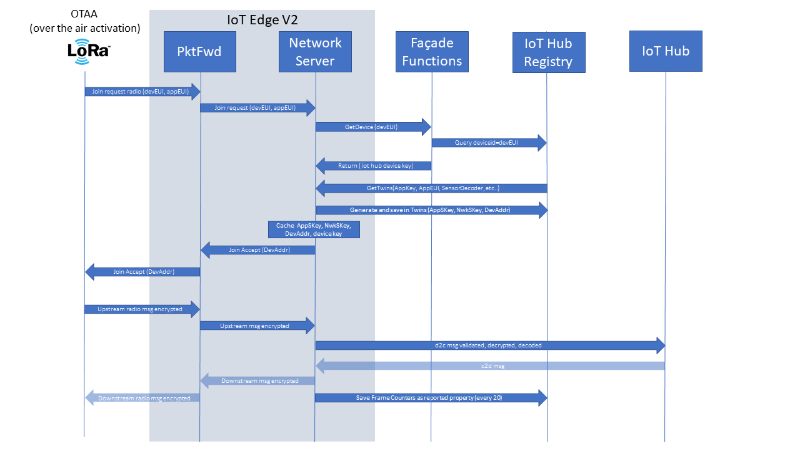
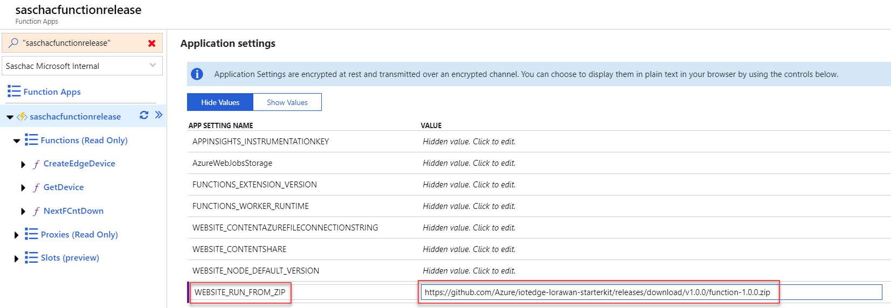
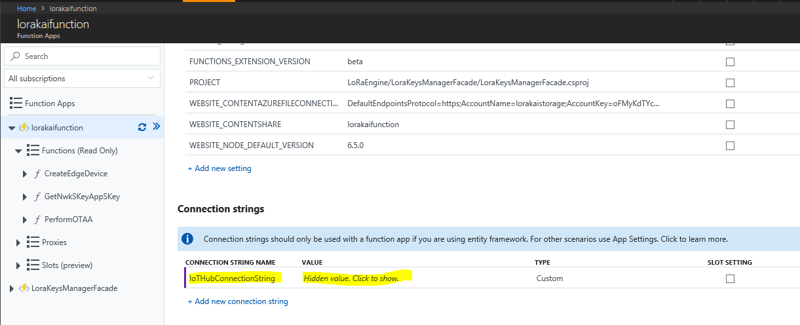
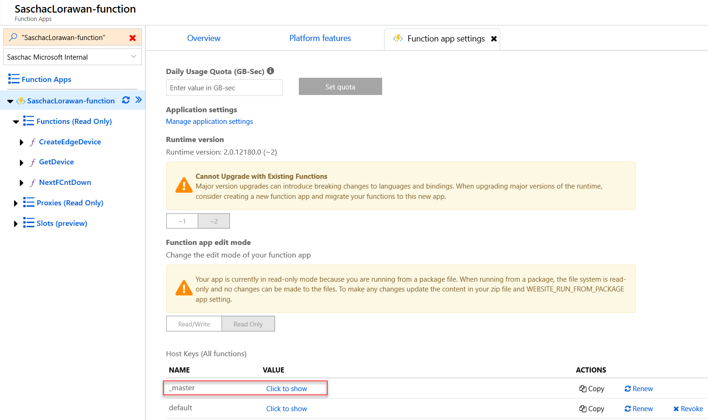
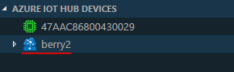
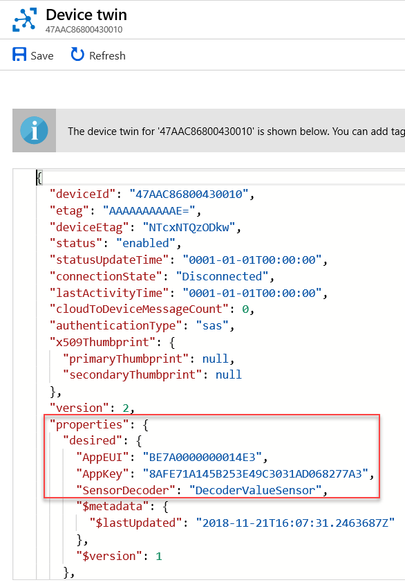

Developer Guidance
Directory Structure
The code is organized into three sections:
- LoRaEngine - a .NET core 3.1 solution with the following folders:
- modules - Azure IoT Edge modules.
- LoraKeysManagerFacade - An Azure function handling device provisioning (e.g. LoRa network join, OTAA) with Azure IoT Hub as persistence layer.
- LoRaDevTools - library for dev tools (git submodule)
- Arduino - Examples and references for LoRa Arduino based devices.
- Template - Contain code useful for the "deploy to Azure button"
- Tools - Contains tools that support the LoRaWan Gateway project
- Cli-LoRa-Device-Provisioning - .NET Core 2.1 Command Line tool that allows to list, query, verify, insert, edit, update and delete LoRa leaf device configurations into IoT Hub
- Samples - Contains sample decoders
- Docs - Additional modules, pictures and documentations
LoRaEngine
A .NET Core 3.1 solution with the following projects:
- modules - Azure IoT Edge modules.
- LoRaBasicsStationModule packages the Basics Station into an IoT Edge compatible docker container. See https://github.com/lorabasics/basicstation. If you are using a RAK833-USB you need to build your own Basics Station docker image starting from the fork at this link
- LoRaWanNetworkSrvModule - is the LoRaWAN network server implementation.
- LoraKeysManagerFacade - An Azure function handling device provisioning (e.g. LoRa network join, OTAA) with Azure IoT Hub as persistence layer.
- LoRaDevTools - library for dev tools (git submodule)
The overall architecture
This schema represent the various components and how they interact to have a better understand of the various solution elements.

- Once the IoT Edge engine start on the Edge device, the code modules are downloaded from the Azure Container Registry.
-
The module containing the
LoRaWan network serveris downloaded on the Edge device -
The LoRaWan Network Server request status for the LoRa devices. The Azure Function
LoraKeysManagerFacadeis used to aquire the device identity from IoT Hub. - In the case you're using the demo device with the automatic deployment Azure Resource Manager (ARM) template: the Azure function
LoraKeysManagerFacadewill register the device47AAC86800430028into the Azure IoT Hub for you. Otherwise you need to provision a device yourself in IoT Hub: device provisioning - The Azure function
LoraKeysManagerFacadesends back the device identity to the module -
The
LoRaWan Network Servermodule:- instantiate the device on the LoRa Gateway if needed - gather the LoRa sensor data from the LoRaWan gateway thru the
LoRa Basics™ Station- decode the LoRa data if requested -
Publish the LoRa sensor data to Azure IoT Hub
Another view of the architecture and a more message driven view is the following:

Getting started with: Build and deploy LoRaEngine
The following guide describes the necessary steps to build and deploy the LoRaEngine to an Azure IoT Edge installation on a LoRaWAN antenna gateway.
If you want to update a LoRa Gateway running a previous version fo our software to the current release, follow this guide
Used Azure services
Prerequisites
- Have LoRaWAN concentrator and edge node hardware ready for testing. The LoRaEngine has been tested and build for various hardware setups. However, for this guide we used the Seeed LoRa/LoRaWAN Gateway Kit and concentrator and the Seeeduino LoRaWAN as edge node.
- Installed Azure IoT Edge on your LoRaWAN concentrator enabled edge device.
- SetUp an Azure IoT Hub instance and be familiar with Azure IoT Edge module deployment mechanism.
- Be familiar with Azure IoT Edge module development. Note: the following guide expects that your modules will be pushed to Azure Container registry.
- Create a new IoT Edge device in you IoT Hub with a name of your choice and the default settings.
Create Redis Cache
- Create a
Redis Cachein your resource group and the region you are using with aDNS Nameof your choice and of the sizeStandard C0. Leave all other settings unchanged. - Navigate to your Redis Cache and from Settings -> Access Keys, note the
Primary connection string (StackExchange.Redis).
Setup Azure function facade and Azure Container registry
You have the option to either deploy the Azure Function code from your Visual Studio Code to Azure or create an empty Azure Function that points to a Zip file hosted by us, containing the function code. Follow one of the two sets of instructions that follow:
Deploy manually using Visual Studio
On your Visual Studio Solution, right click on the 'LoRaKeysManagerFacade' project, select 'deploy', then 'Azure' and then 'Azure function'. You should then arrive on a page where you just need to hit the deploy button to get the code deployed on Azure.

Deploy manually using Visual Studio Code
- Open the Azure function folder with Visual Studio Code with the Azure Functions Plugin installed. Now run the command
Azure Functions: Deploy to function app...and provide the name of the Azure function to deploy to. If prompted, select environmentC#and versionV3.
- If you want to just deploy the function from Visual Studio Code with the root project folder
iotedge-lorawan-starterkitopen (of which the Function is a subfolder/LoRaEngine/LoraKeysManagerFacade), you need to run the Visual Studio CommandAzure Functions: Deploy to function app...and then manually choose the folderLoraKeysManagerFacade/bin/Release/netcoreapp3.1/publish. (Unfortunately at time of this writing we saw the behavior that VSCode is proposing the wrong folder). Building the function does not work in this way unfortunately.
If you choose to create an empty Azure Function pointing to our Zipped code
- Using the Azure Portal, create a new "Function App" in the resource group and location you chose for the deployment, using the default creation settings.
- Once the function is created, navigate to the
Application settingsfrom the Overview page. - Add a new
Application Settingwith:
| App Settings Name | Value |
|---|---|
| WEBSITE_RUN_FROM_ZIP | https://github.com/Azure/iotedge-lorawan-starterkit/releases/download/v1.0.4/function-1.0.4.zip |

Follow these next steps in both cases
- Configure IoT Hub and Redis connection strings in the function:
Copy your Redis Cache connection string in a connection string names RedisConnectionString
Copy your IoT Hub Connection string with owner policy applied:

Now paste it into Application settings -> Connection strings as IoTHubConnectionString of type Custom:

Also, add the previously saved Primary connection string (StackExchange.Redis) from your Redis Cache to the Connection strings of your function. Use type Custom again.

From the Facade Azure function, extract the Host key of type _master and save it somewhere. (We will need it in the next step)

- Create your
.envfile in the/LoRaEnginefolder by copying theexample.envfile located here - Configure your
.envfile with your own Azure Container registry as well as the Facade access URL and credentials. Set the region to "EU" or "US" based on your location. You do not need to change any of the other settings at this point. Those variables will be used by our Azure IoT Edge solution template.
...
CONTAINER_REGISTRY_ADDRESS=yourregistry.azurecr.io
CONTAINER_REGISTRY_USERNAME=yourlogin
CONTAINER_REGISTRY_PASSWORD=registrypassword
...
REGION=EU
...
FACADE_SERVER_URL=https://yourfunction.azurewebsites.net/api/
FACADE_AUTH_CODE=yourfunctionpassword
...
Use a Proxy server to connect your Concentrator to Azure
This step is optional and should only be executed if your concentrator needs to use a proxy server to communicate with Azure
Follow the guide on configuring an IoT Edge device to communicate through a proxy server to:
- Configure the Docker daemon and the IoT Edge daemon on your device to use a proxy server.
- Configure the edgeAgent properties in the config.yaml file on your device.
- Set environment variables for the IoT Edge runtime in the deployment manifest.
After that, add the environment variable https_proxy to the LoRaWanNetworkSrvModule in your IoT Hub → IoT Edge → Edge Device → Set Modules section.

End of optional proxy configuration
Setup concentrator with Azure IoT Edge
- Note: if your LoRa chip set is connected by SPI on raspberry PI bus don't forget to enable it, (You need to restart your pi).
- Build and deploy Azure IoT Edge solution
We will use Azure IoT Edge for Visual Studio Code extension to build, push and deploy our solution.
Make sure you are logged in to the Azure Container Registry you are using. Run docker login <mycontainerregistry>.azurecr.io on your development machine.
Select the architecture of your gateway (Azure IoT Edge Solution Default Platform) by clicking on the button in the taskbar and selecting amd64 or arm32v7 in the command pallette.

Now, build an push the solution by right clicking deployment.template.json and select Build and Push IoT Edge Solution.

After that you can push the solution to your IoT Edge device by right clicking on the device and selecting Create Deployment for single device. In the file dialog, navigate to the LoRaEngine\config folder and select the deployment.json file which was created during the previous step.

Provision LoRa leaf device
The sample code used in this example is based on Seeeduino LoRaWAN with a Grove - Temperature Sensor. It sends every 30 seconds its current temperature reading and prints out a Cloud-2-Device message if one is transmitted in its receive window.
The sample has configured the following sample device identifiers and credentials:
- DevEUI:
47AAC86800430010 - AppEUI:
BE7A0000000014E3 - AppKey:
8AFE71A145B253E49C3031AD068277A3
You will need your own identifiers when provisioning the device.
Look out for these code lines:
lora.setId(NULL, "47AAC86800430010", "BE7A0000000014E3");
lora.setKey(NULL, NULL, "8AFE71A145B253E49C3031AD068277A3");
To provisioning a device in Azure IoT Hub with these identifiers and capable to decode simple value payload into Json you have to create a device with:
Device Id: 47AAC86800430010 and Device Twin's deired properties:
"desired": {
"AppEUI": "BE7A0000000014E3",
"AppKey": "8AFE71A145B253E49C3031AD068277A3",
"SensorDecoder": "DecoderValueSensor"
}
You can provision the device manually in the Azure portal or use the provided Command Line Interface Provisioning Tool to list, query, verify add, update, and remove devices.
The command to execute is:
dotnet run -- add --type OTAA --deveui 47AAC86800430010 --appeui BE7A0000000014E3 --appkey 8AFE71A145B253E49C3031AD068277A3 --decoder DecoderValueSensor
To manually provision the device in IoT Hub, do the following:


Device to Cloud and Cloud to Device messaging in action
As soon as you start your device you should see the following:
- DevAddr, AppSKey and NwkSKey are generated and stored in the Device Twin, e.g.:
"desired": {
"AppEUI": "BE7A0000000014E3",
"AppKey": "8AFE71A145B253E49C3031AD068277A3",
"SensorDecoder": "DecoderValueSensor",
"AppSKey": "5E8513F64D99A63753A5F0DBB9FB9F91",
"NwkSKey": "C0EF4B9495BD4A4C32B42438CD52D4B8",
"DevAddr": "025DEAAE",
"DevNonce": "D9B6"
}
- If you follow the logs of the network server module (e.g.
sudo iotedge logs LoRaWanNetworkSrvModule -f) you can follow the LoRa device join:
{"rxpk":[{"tmst":3831950603,"chan":2,"rfch":1,"freq":868.500000,"stat":1,"modu":"LORA","datr":"SF7BW125","codr":"4/5","lsnr":8.5,"rssi":-30,"size":23,"data":"AOMUAAAAAHq+EABDAGjIqkfZtkroyCc="}]}
Join Request Received
{"txpk":{"imme":false,"data":"IE633dznxvgA89ZTkH1jET0=","tmst":3836950603,"size":17,"freq":868.5,"rfch":0,"modu":"LORA","datr":"SF7BW125","codr":"4/5","powe":14,"ipol":true}}
Using edgeHub as local queue
Updating twins...
Join Accept sent
TX ACK RECEIVED
- Every 30 seconds the temperature is transmitted by the device, e.g.:
{
"time": null,
"tmms": 0,
"tmst": 4226472308,
"freq": 868.5,
"chan": 2,
"rfch": 1,
"stat": 1,
"modu": "LORA",
"datr": "SF12BW125",
"codr": "4/5",
"rssi": -33,
"lsnr": 7.5,
"size": 18,
"data": {
"temperature": 18.78
},
"EUI": "47AAC86800430010",
"gatewayId": "berry2",
"edgets": 1534253192857
}
Note: an easy way to follow messages send from the device is again with VSCode: right click on the device in the explorer -> Start Monitoring D2C Message.
This is how a complete transmission looks like:

You can even test sending Cloud-2-Device message (e.g. by VSCode right click on the device in the explorer -> Send C2D Message To Device).
The Arduino example provided above will print the message on the console. Keep in mind that a LoRaWAN Class A device will only receive after a transmit, in our case every 30 seconds.
Observability
We support Azure Monitor for observability of the LoRaWAN starter kit. If you decide to use Azure Monitor, you will need to create an Application Insights instance and a Log Analytics workspace in your subscription. To enable observability, modify the following settings in your .env file:
APPINSIGHTS_INSTRUMENTATIONKEY={appinsight_key}
IOT_HUB_RESOURCE_ID=/subscriptions/{subscription_id}/resourceGroups/{resource_group}/providers/Microsoft.Devices/IotHubs/{iot_hub_name}
LOG_ANALYTICS_WORKSPACE_ID={log_analytics_workspace_id}
LOG_ANALYTICS_SHARED_KEY={log_analytics_shared_key}
Generate a deployment manifest from deployment_observability.layered.template.json and deploy it to the edge devices for which you want to apply the observability. The template will set up the metrics collector module on the edge and connect it with your Log Analytics instance. The gateway will connect to your Application Insights instance. Make sure to set the APPINSIGHTS_INSTRUMENTATIONKEY before deploying the deployment.template.lbs.json solution, if you want to make sure that the gateway can connect to Application Insights. The Application Insights log level will always be the same as the console log level.
The Network Server will always expose metrics in Prometheus format at the path /metrics. You can scrape these metrics using the tool of you choice.
Debugging in Visual Studio, outside of IoT Edge and Docker
It is possible to run the LoRaEngine locally from Visual Studio in order to enable a better debugging experience. Here are the steps you will need to follow in order to enable this feature:
-
Either change the value server_adress in the file local_conf.json (located in LoRaEngine/modules/LoRaWanPktFwdModule) to point to your computer. Rebuild and redeploy the container.
-
Alternatively, configure your unmodified LoRaWanPktFwdModule Docker container / Edge module with the environment variable
NETWORK_SERVER=<ip of your computer> -
If you are using a Wireless network in Windows, make sure it is configured as a private network in your Windows settings. Otherwise, the Windows Firewall will bock the incoming UDP packets.
-
Open the properties of the project LoRaWanNetworkServerModule and set the following Environment Variables under the Debug tab:
- IOTEDGE_IOTHUBHOSTNAME : XXX.azure-devices.net (XXX = your iot hub hostname) - ENABLE_GATEWAY : false - LOG_LEVEL : 1 or Debug (optional, to activate most verbose logging level) - FACADE_SERVER_URL : http://localhost:7071/api/ (when debugging locally or any other URL of the Azure function you want to use) - IOTEDGE_DEVICEID : The Name of your PC
-
Add a
local.settings.jsonfile to the project LoRaKeysManagerFacade containing:{ "IsEncrypted": false, "values": { "AzureWebJobsStorage": "<Connection String of your deployed blob storage>", "WEBSITE_CONTENTSHARE": "<Name of your Azure function>" }, "ConnectionStrings": { "IoTHubConnectionString": "<Connection string of your IoT Hub Owner (go to keys -> IoT Hub owner and select the connection string)>", "RedisConnectionString": "<Connection string of your Redis Cache>" } } -
Right click on your solution and select properties, select multiple startup projects. Start
LoRaWanNetworkSrvModuleandLoRaKeysManagerFacade. -
If you hit start in your VS solution, you will receive messages directly from your LoRa Basics™ Station. You will be able to debug directly from your computer.
Happy Debugging!